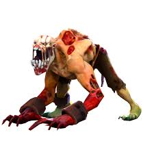
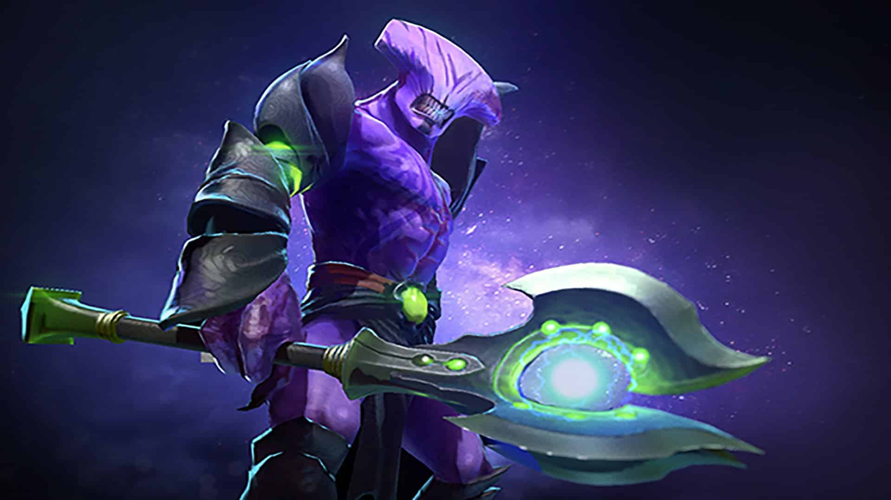

Шо пікати
Кукі дуже любить пікати різноманітних героїв і в списку я перечислю весь його пік
-
Лайфстілер
 -
Спектра

-
Фалос Воіда

Це всі герої(до речі в доті 126 героїв), яких пікає кукі на лайн,
далі буде топ можливих причин чому кукі не дофармулює
-
"Сапорт гуляє а мене єбут"
-
Бо патісон прийшов на лінію
-
Бо купол не використовується для фарма заради більшої швидкості атаки та руху